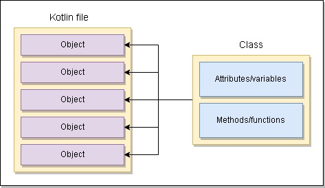

Kotlin Basics
Kotlin Basics
Overview
Kotlin is a statically typed language by Jetbrains, and is the official Android language used for Android development by Google
I cover the concepts of Kotlin along with example code base below, which range from basics to complex concepts
This documentation is meant to be my personal documentation which I shall keep updating and revisiting to keep me on my toes with the language, but it also acts as a learning resource for anyone else who is getting into the language.
Below is what is covered in the guide, with links directing to the specific sections.
Table of Content
Standard Input and Output
Standard input and Output are means of giving input to a program and receiving output/feeback of a program from the screen.
Output
The Kotling standard output comes in print statements, which are defined as below:
println("Hello there") // Prints out content and appends a new line
print("Hello there") // Prints out content without a new line
Input
To get the input of a user, we use the readLine() or the readln()statement as below
println("What is the name of your city: ")
var city = readln()
println("Your city is $city")
Note that the readln() and readLine() statements output the passed input as a string. To get a string output (for possible processing such as calculations), you can use the Null assertion and the toInt() statement as below
println("What is your age: ")
var age = readLine()!!
println("Your age is ${age.toInt()}")
In the event the user enters the wrong input type (eg string instead of int), we can use the try, catch exception handling.
Below is an example:
// Input statement with a tyy catch block
try {
println("Please enter your age")
var age2 = readLine()!!
println("Your age is : ${age2.toInt()}")
} catch (e : Exception){
println("You have entered a wrong input type")
println("The error is $e")
}
Scanner class for inputs as below
// note: don't forget the backticks '`' at System.`in`
val scanner = Scanner(System.`in`)
println("Please enter a number")
val ip = scanner.nextInt()
println("The number entered is $ip")
println("Please enter a sentence")
val ip2 = scanner.nextLine()
println("The sentence entered is $ip2")
Variables
Variables are used to store data in programming languages, and they could be integers, string, boolean etc
Variable Data Types
Data types are basically the type of data that a variable holds. The most commonly used data types are Integer, String, Boolean etc, but below is a list of primitive data types in Kotlin
// Byte, -126-127 (8 bits)
val byteno : Byte = 23
// Short, -32768-32769 (16 bit)
val shortno : Short = 10000
// Integer, (32 bit)
val intno : Int = 200_000_000
// Long (64 bit)
val longNo : Long = 1_000_000_000_000_000_000
// Float
val floatNo : Float = 123.1234F
// Double
val doubleNo : Double = 1234.124132515
// Character
val char : Char = 'z'
// Boolean
val boolVal : Boolean = true
// String
val myString : String = "This is my string"
Mutable & Immutable variables
There are two types of variables ie mutable & immutable(read-only) variables:
- mutable variables are variables that can be changed in the program and are declared by
var - immutable variables are variables that can not be changed (read-only or constants) and are declared by
val
val name : String = "Kifaru" // this variable can not be changed
var another_name : String = "Iron man" // this variable can be changed
Nullable Types
Kotlin by default does not alllow assigning null values to variables. This means that the below code will give an error.
val string: String = null // this will give an error
To solve this, put a ? after the variable data type, like below:
val string: String? = null // this will not give an error
Type Inference
Type inference in Kotlin is where the compiler can automatically tell what data type a variable is meant to be without having to explicitly put the data type
val color = "Blue" // compiler will automatically tell that this is a string
val number = 20 // compiler will automatically tell that this is an integer
Trype conversion
Type conversion is the process of converting the type of a variable or value into another
Below are examples of conversions between different types. Note that conversions from some types to others will give undesired results or errors
// int to string
var number1 : Int = 50
var sentence1 = number1.toString()
println(sentence1)
// string to int
var sentence2 = "20"
var number2 = sentence2.toInt()
println(number2)
// string to int : This will give an error
var sentence3 = "sentence"
var number3 = sentence3.toInt()
println(number3)
Below are the common type conversion statements:
// convert to integer
val variable = variable2.toInt()
// convert to string
val variable = variable2.toString
// convert to float
val variable = variable2.toFloat()
// convert to long
val variable = variable2.toLong()
// convert to double
val variable = variable2.toDouble()
Operators
Arithmetic Operators
Arithmetic operators are used for mathematic operations such as addition, subtraction etc. Below is a list of the common arithmetic operations
| Operator | Name |
|---|---|
| + | Addition |
| - | Subtraction |
| * | Multiplication |
| / | Division |
| % | Modulus |
| ++ | Increment |
| -- | Decrement |
Assignment Operators
As the name suggests, the assignment operators are used to assign values to variables. Below is an example of the common assignment operators
| = | x = 2 | |
|---|---|---|
| + | x += 5 | Addition |
| - | x -= 5 | Subtraction |
| * | x *= 5 | Multiplication |
| / | x /= 5 | Division |
| % | x %= 5 | Modulus |
Comparison Operators
Again as the name suggests, comparison operators are used to compare two variables or values. They return a boolean value ie, true or false
| == | Equal to |
|---|---|
| != | Not equal to |
| < | Less than |
| > | Greater than |
| <= | Less than or equal to |
| >= | Greater than or equal to |
Logical Operators
These operators chech the logic between variables or values
| && | AND |
|---|---|
| || | OR |
| ! | NOT |
In Operator
The in operator is ised to check the existence of a value in a range of values while !in is used to check the absence of a value in a range of values.
Below is a simple example
val range = listOf(12,21,45,543,3,6,34)
val search_no = 4
if (search_no in range){
println("found the number")
} else {
println("Number not found")
}
Expressions, Statements & Blocks
Expressions
Expressions are variables and operators that equate to a single value. Below are examples of expressions
val x : Int = 2 + 3
// here 2 + 3 is the expression
val no : Int = (1..1000).random()
// here (1..1000).random() is an expression
val no_check = if(another_no > 3000) "number is bigger" else "number is smaller"
//here (another_no > 3000) "number is bigger" else "number is smaller" is an expression
Statements
Statements are everything that make up a complete unit of execution. Note that Expressions are part of statements
val x : Int = 2 + 3
val no : Int = (1..1000).random()
val no_check = if(another_no > 3000) "The number is bigger" else "The number is smaller"
println("Hello world")
Blocks
BLocks are zero to more statements enclosed in curly braces {...}.
Below is an example of a block
fun main() { // main function block
val flag = true
if (flag == true) { // start of if block
print("Hello there ")
print("How are you")
} // end of if block
}
Conditionals
Conditionals in any programming language are used to control the logical flow of the program. Here we explore a number of conditionals that are commonly used in everyday programming languages.
If Statements
If statements are defined as below, in Kotlin
if (condition-1){
Statement
} else if (condition-2){
Statement
} else {
Statement
}
Example
val random_no : Int = (-20..20).random()
val result = if (random_no < 0) {
println(random_no)
println("The number is negative")
} else {
println(random_no)
println("The number is positive")
}
you can also use ternary operators for a simple if statement. Note that this only applies for a simple if-else statement with only one statement in each block.
Below is an example.
val no = readLine()!!.toInt()
val result = if (no > 0) "Positive" else "negative"
println(result)
When Statements
Kotlin does not have a Switch statement, instead it has a When statement
Below are examples of a when statements
Example 1
val when_var = readLine()!!.toInt()
when(when_var){
10 -> {
println("Number is 10")
}
20 -> {
println("number is 20")
}
else -> {
println("The number is not listed")
}
}
Example 2
println("enter fitst number")
val no1 = readLine()!!.toInt()
println("enter second no")
val no2 = readln()!!.toInt()
println("enter operator")
val op = readln()
val result = when (op){
"+" -> {
"$no1 $op $no2 = ${no1 + no2}"
}
"-" -> {
"$no1 $op $no2 = ${no1 - no2}"
}
"*" -> {
"$no1 $op $no2 = ${no1 * no2}"
}
"/" -> {
"$no1 $op $no2 = ${no1 / no2}"
}
"%" -> {
"$no1 $op $no2 = ${no1 % no2}"
}
else -> {
"The operator selected is not in the list"
}
}
println(result)
!! in readline()!! is a not-null assertion, that means that the variable is not null. More reading Here
Loops
Loops are code blocks that are repeated over and over till a certain condition is met.
While Loops
while/do-while loops will loop continuously till a certain specified condition is met. They can run infinitely if the condition is not met.
We have the while and the do-while loops.
Below is an example of a while loop
var no = 0
while (no <= 10){
println(no)
++no
}
Below is an example of a do-while loop
var no = 0
do {
println(no)
++no
} while (no <=10)
do-while loop will be executed at least once, unlike the while loop
For Loops
for loops will loop a certain number of specified times
Below is an example of a simple for loop.
// print numbers 1 to 100
for (i in 1..100){
println(i)
}
// print the sum of each following number from 1 to 100
// ie 1 + 2 + 3 + 4 ... + 98 + 99 + 100
var no = 0
for (i in 1..100){
print("$no + $i = ")
no += i
println(no)
}
i in 1..10 is the same as 1 <= i <= 10
downTo can be used to achieve the reverse order as shown below
// print numbers 100 to 1
for (i in 100 downTo 1){
println(i)
}
We can add steps to the iteration as below
// print numbers 1 to 100 with steps of 10
// this will print out 1, 11, 21, 31,.., 81, 91
for (i in 1..100 step 10){
println(i)
}
// print numbers 100 to 1 in steps of 5
// this will print out 100, 95, 90 ... 15, 10, 5
for (i in 100 downTo 1 step 5){
println(i)
}
We can also use until as shown below
// this will print out the numbers 1 till 99
for (i in 1 until 100){
println(i)
}
We can also loop through arrays (both integers and strings)
// loop through integers
val even_no = listOf(2,4,6,8,10)
for (i in even_no){
println(i)
}
// loop through strings
val months = listOf("Jan", "Feb", "Mar", "Apr", "May")
for (i in months){
println(i)
}
Functions
Functions hold code statemsnts that can be executed multiple times without having to repeat the same code over and over again. They are declared by the fun term, and the code statement held in {} curly brackets.
fun main(){..} is the entry point of a program in Kotlin, and is where the code starts running from.
On defining the function, it is called in the main to have it executed, as shown below.
// calling the function
fun main(){
myfun()
}
// defining the function
fun myfun(){
println("This is my function")
}
Function parameters
We can pass parameters to the function as in the below function that gets the multiple of two integers
fun main(){
multiply(2, 8)
}
fun multiply(no1 : Int, no2 : Int){
val result = no1 * no2
println(result)
}
Default parameters
In addition, we can pass default parameters. This means, if we do not pass them as arguments to the function, we shall not have an error, and the default parameter shall be passed as an argument. Below is an example:
fun main(){
multiply(2, 8)
}
// function with a default parameter passed as an argument
fun multiply(no1 : Int, no2 : Int, message : String = "The multiple is: "){
val result = no1 * no2
println(message + result)
}
Return as Expression
In the above examples, we have functions as statements (ie make up a whole unit of execution refer to statements here). To use them as expressions (refer to expressions here) we use return. In addition we have to define the data type we are returning, as defined below.
fun main(){
val result = multiply(2, 8)
print(result)
}
fun multiply(no1 : Int, no2 : Int) : Int{
return no1 * no2
}
Recursion
Recursion is the concept of a function calling itself.
Below is an example of a recursion that calls itself infinitely, and does not stop. This is highly inadvisable as it tends to build a lot of issues.
The program stops with an error: Exception in thread "main" java.lang.StackOverflowError as it runs too many times
fun main(){
infinite_recursion()
}
var loop = 0
fun infinite_recursion(){
loop ++
println("I am an infinite recursion: loop $loop")
infinite_recursion()
}
to avoid the StackOverflowError we have to define a stopping point
OOP
Object Oriented Programming is the concept of using classes and objects to create codebase that is simple and reusable
Classes & Objects
A Class is the blueprint of an object and contains all the logic for creating an object.
We can create multiple instances of a class through objects as illustrated below

A class can be created in the main Kotlin file, but it is recommended that it is created in an external file. It is also recommended that the file name be the same as the class name (optional)
In the below example we create a class Car which has different methods describing the car. We pass a parameter Brand which is going to be passed when we instantiate the class to create an object
class Car (_brand : String){
private var isTurnedOn = false
var speed = 0
var brand = _brand
fun startEngine(){
if (isTurnedOn == false) {
print("Turning on the engine...")
Thread.sleep(500)
print("1 . ")
Thread.sleep(500)
print("2 . ")
Thread.sleep(500)
println("3 . ")
Thread.sleep(1000) // give a delay of 1s
println("The $brand is now on...")
Thread.sleep(1000)
isTurnedOn = true
Thread.sleep(1000)
} else {
println("The $brand is already turned on")
Thread.sleep(1000)
}
}
fun drive(speed : Int){
// the car has to be on to drive the car
if (isTurnedOn) {
println("Changing the speed to $speed km/h")
Thread.sleep(1000)
println("We are now moving at $speed km/h")
Thread.sleep(1000)
} else {
println("The car has to be on to start")
Thread.sleep(1000)
}
}
fun turnOffEngine(){
if (isTurnedOn == true){
println("Turning off the engine")
Thread.sleep(1000)
println("The $brand is now turned off")
} else {
println("The car is already off")
}
}
}
Thread.sleep(500) for delays in the program, which prevents the program from being executed immediately
After creating the class, which is out blueprint, we create the object as below
fun main(){
// instantiate the class ie create the object
val bentley = Car("Bentley")
bentley.startEngine()
bentley.drive(20)
bentley.startEngine()
bentley.turnOffEngine()
}
You can also instantiate the class as below
fun main(){
// instantiate the class ie create the object
val bentley = Car("Bentley").also {
it.startEngine()
it.drive(20)
it.startEngine()
it.turnOffEngine()
}
}
The above will therefore give an output as below:
Turning on the engine...1 . 2 . 3 .
The Bentley is now on...
Changing the speed to 20 km/h
We are now moving at 20 km/h
The Bentley is already turned on
Turning off the engine
The Bentley is now turned off
Constructors & Init
- Constructors: These are variables/parameters that are passed to your class. There are two types of constructors: primary and secondary
- Initializer Blocks: These are methods that are run when your class is instantiated in an object. They will run without having to explicityly call them
We create a class as below:
class PizzaKitchen(_pizzaInOven:Boolean, _pizzaType:String) {
var pizzaInOven = _pizzaInOven
var pizzaType = _pizzaType
init {
if (pizzaInOven){
println("There is a $pizzaType pizza in the oven. Please wait till it is ready")
} else {
println("There is no pizza in the oven. You can put a new pizza in")
}
}
}
From the above class, instantiating it as false or true will give the following results respectively
fun main(){
val newPizza = PizzaKitchen(false , "Hawaiian")
}
// This will give an output of "There is no pizza in the oven. You can put a new pizza in"
fun main(){
val newPizza = PizzaKitchen(true , "Hawaiian")
}
// This will give an output of "There is a Hawaiian pizza in the oven. Please wait till it is ready"
Note that everything in init runs automatically when the class is instantiated. This can be handy for different applications.
Getters & Setters
As the names indicate, getters are used to get values of attributes in a class, while setters are used to edit the values of attributes in a class.
By default getters and setters are automatically created for each property/attribute internally, so we do not have to explicityly declare a getter or setter. Example below:
fun main(){
val batman = Person("Bruce", 30)
println(batman.name) // get the property name
batman.name = "wayne" // set the property name
println(batman.name) // get the property name again
}
// Class person
class Person (_name:String, _age:Int) {
var name = _name
var age = _age
}
You can however customize getters and setter using the backing field as below:
fun main(){
val batman = Person("Bruce", 30)
println(batman.name)
batman.name = "wayne"
println(batman.name)
}
class Person (_name:String, _age:Int) {
var name = _name
get() {
return "the name is " + field
}
set(value) {
if (value.length < 5){
println("The name is too short")
} else {
field = value + " and I am Batman "
}
}
var age = _age
}
The general format is therefore as below, and we can add in out custom code to how we would like to format our getters and setters
var name = _name
get() {
return field
}
set(value) {
field = value
}
Note: we do not use the name ,of the property/variable but instead we use field (this is the backing field). This is because using the variable name will be like calling itself, leading to a recursive instance, hence leading to a stackoverflow error
Reference : Backing Field in Kotlin ('field' keyword within custom Getter and Setter methods)
val variable as they are immutable
Visibility modifiers
These are modifiers that determine where functions/properties/classes/interfaces are visible or accesible from.
Here are the different types of modifiers in Kotlin:
- Public : accessible anywhere and everywhere
- Internal : accessible only within the same module
- Private : accessible only within a class or file
- Protected : accessible within the same file or class (like private) but in addition within the same subclass and child class (inheritance)
Inheritance
This is the process where we derive a class from an existing class. This prevents us from having to repeat code (code reusability)
Extra Research Topics
- What is a lambda function?
- What is a trailing lambda?
© Copyright Kifaru Codes. All Rights Reserved.
Designed by KifaruCodes